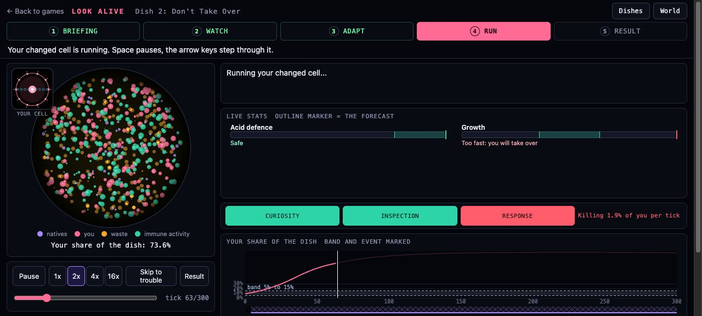
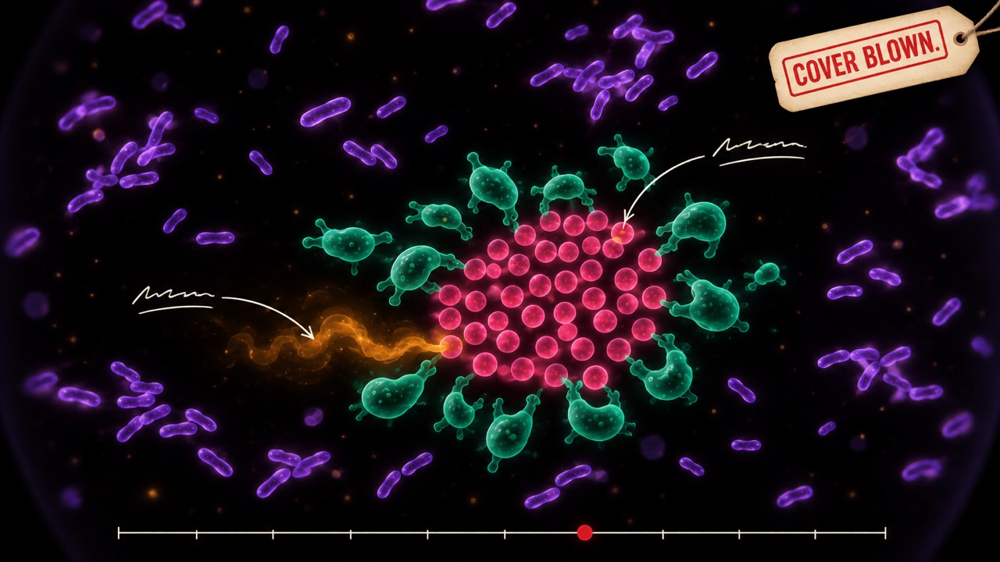
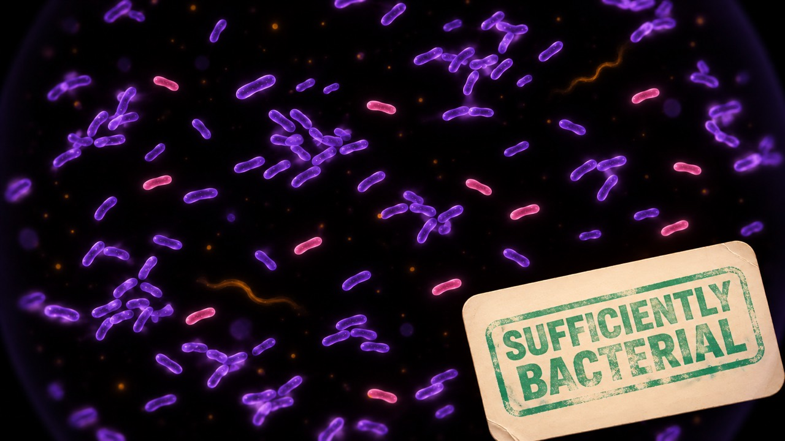
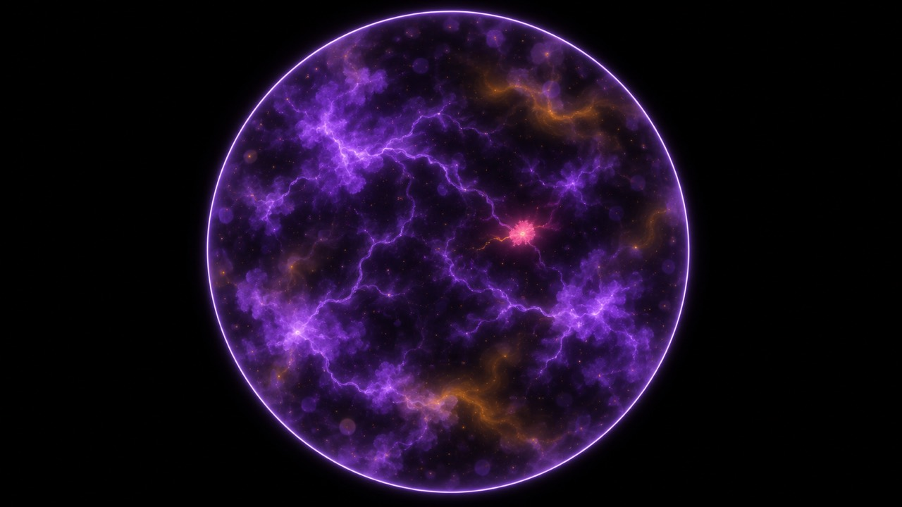
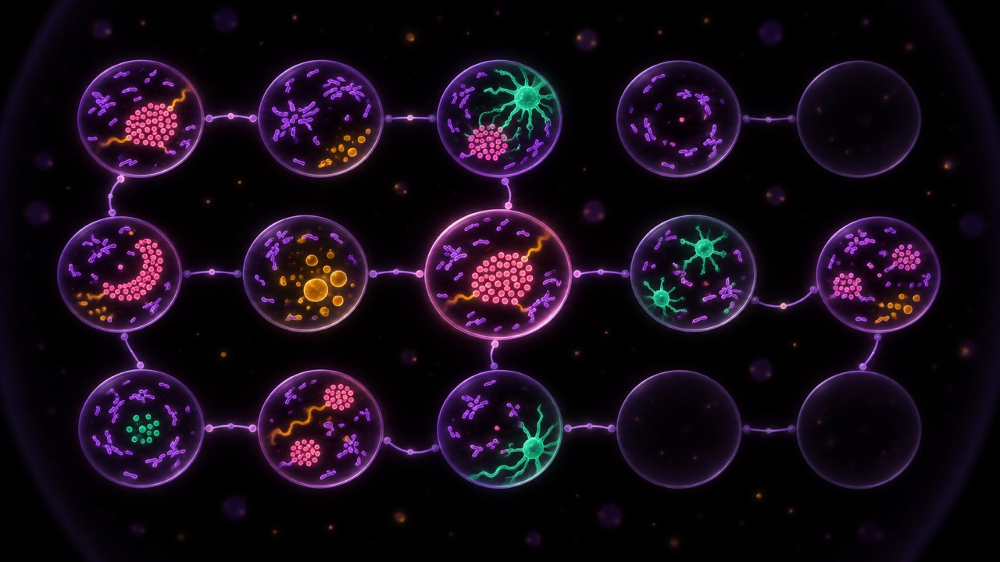
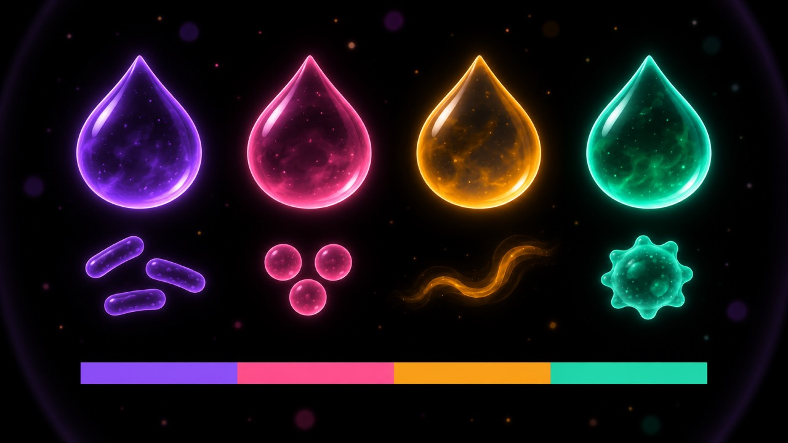
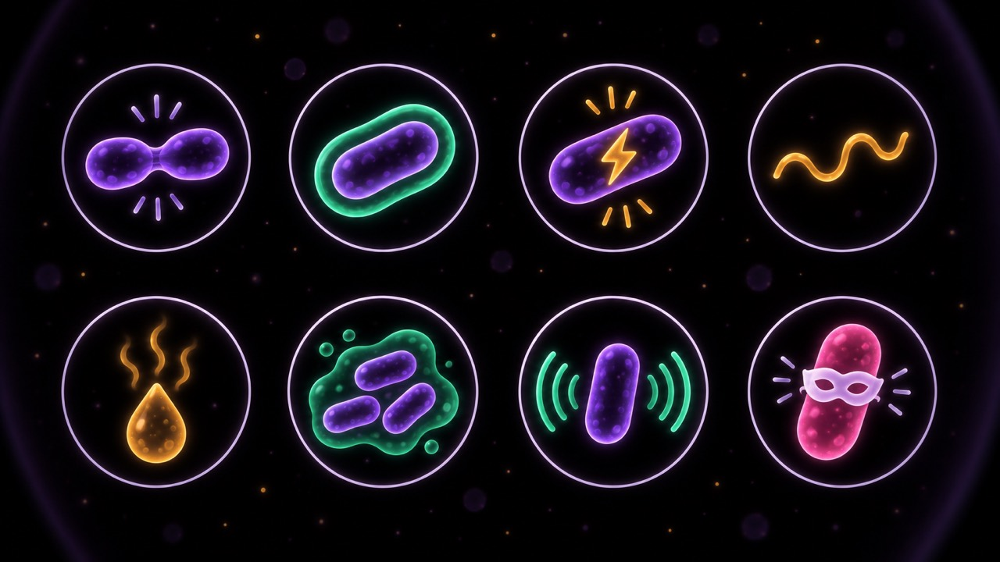
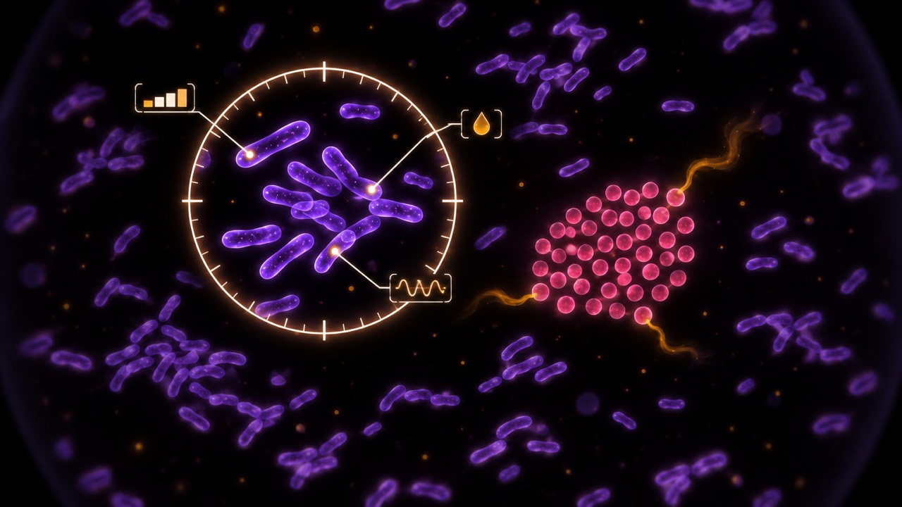
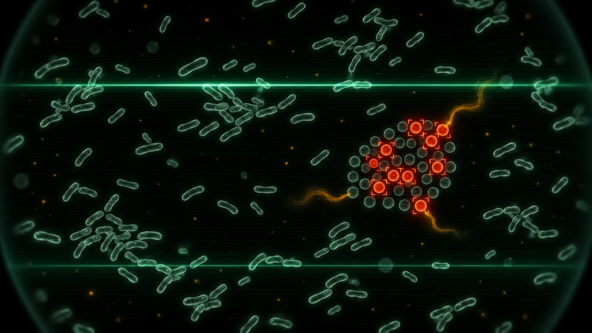
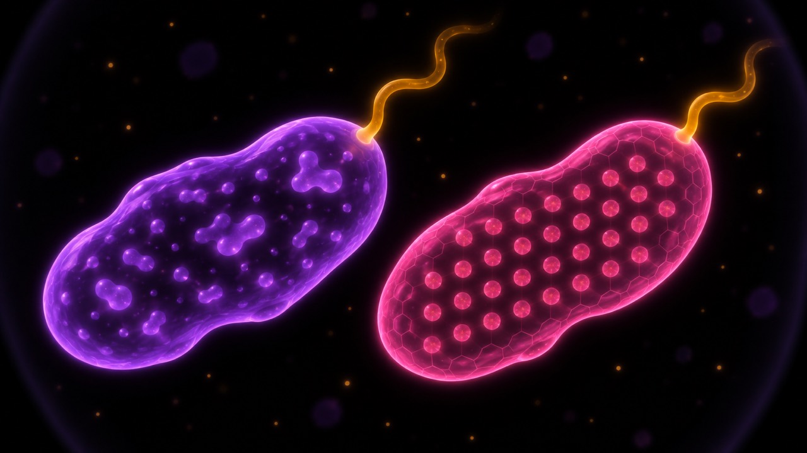

The dish should feel like looking down a microscope. This page tests how to get there. Every picture below is a live WebGL2 render, not a screenshot. The cells are a small stand-in simulation, not the real game.
Recommendation. Build Dark field with depth and haze (option B) as the default look. Draw every cell as one instanced shader (a signed-distance capsule with rim light, glassy inside, granules and a tail), give each cell a depth so it blurs by its distance from a focal plane, and add a half-resolution bloom, a soft vignette and light grain. Use the rack-focus move at three moments only: entering a dish, the start of Watch, and the zoom into a failure. Keep Relief (DIC) and Fluorescence as optional lens modes for later, since the same cell shader already supports them. Flat dots stay as the low-power fallback. The UI around the dish is already designed in the agreed mock-ups (instrument panel, patterned stat bars, paper results); this update brings the game up to them, in a separate phase from the dish rendering.
The target already exists. The look of the dish and of the screens around it is defined in the plan (section 7) and in thirty reference images, and the owner has pointed to those mock-ups as the starting point. They are the design, not mood pieces. The job is to reach them, not to invent a new look. The current game shows flat dots in a chart-like panel. The mock-ups show a lit specimen, a thin-line instrument panel and paper results.
Today: play screen

Flat dots, no light, no depth. The panel is text and boxes. Nothing says “instrument”.
Target: play screen (03)
The dish fills the left, lit and soft-edged. A slim panel of line icons, gauges and a band graph sits on the right.
Target: build screen (10)
A large cell portrait beside the controls. The portrait is the same cell shader as the dish, zoomed in.
Target: failure slide (11)

Failure is a lab slide: the dish, chalk arrows, a timeline with a red pin and a paper tag.
Target: win (12)

Success is a cream specimen card with a green rubber stamp over the dish.
Target: zoomed out (04)

Far out, cells merge into soft clouds with amber haze. This is the level-of-detail case.
Only the play screen has a current screenshot in the reference folder. The build, result and list screens need new captures before the real before-and-after can be shown.
02From the agreed mock-ups to the screens
Each screen of the game today has a mock-up it should follow. Some of the game has changed since the mock-ups were made. The build screen is now a body-slot loadout with five stat bars, not see-saw sliders. The COVER gauge and needles are gone; the stat bars are Acid defence, Growth, Smell, Naturalness and Crash survival. The steps are Briefing, Watch, Adapt, Run and Result. The table says what to copy, what to adapt, and what is still missing.
Game screen
Follow this mock-up
Adapt, because the game has changed
Still missing
World briefing
26 postcard, 14 to 18 planets
Keep the postcard and planet art. Dish list sits under it as in 25.
Planet images are references only. Each planet needs its own field colour and haze strength in the dish shader.
Dish briefing
13 letterhead memo, 02 specimen label
Briefing text becomes the memo: cream paper, ink, handler voice. It must name the dish’s stat bars in play, not the old COVER gauge.
Paper style is not built. The memo needs the cream card, ink colour and a stamp for the dish goal.
Watch
01 style frame, 03 play screen
Watch drops your carried cell in unchanged, with the rack-focus entry, and stops soon after it fails. The panel shows the stat bars with the failing one marked.
The lit dish itself (G1 to G3). Replay scrubber styled as a thin line with ticks (see 11).
Adapt
10 build screen, 09 scout lens
See-saw sliders become a body-slot loadout with a cell diagram. The five stat bars with forecast outlines replace the dials. Keep the large cell portrait and the rule card on the right.
The cell portrait (the cell shader at large size, see section 05). Slot icons in the line style of 23. A scout lens panel.
Run and replay
03 play screen, 24 patterned gauges
The COVER gauge and needles are replaced by five stat bars in the 24 style (patterned danger ends, green safe band, white marker, outlined forecast). Keep the band graph from 03.
Instrument panel chrome, thin violet panel lines, line icons. Shown live in the next demo.
Result: win
12 specimen card with green stamp
The stamp text is the dish’s verdict. The card lists the five stat bars at the end, not a COVER score.
Paper card, rubber-stamp texture, stamp animation.
Result: loss
11 autopsy slide, 19 robot states
The failing stat bar is named by a chalk arrow from the panel to the cells. Crash survival and Acid defence are the usual causes. The timeline pin marks the tick.
Chalk arrows and handwriting, the timeline with a red pin, the paper tag. Immune cells in 28 style.
Dish list

25 dish wall
One lit specimen thumbnail per dish. Thumbnails can be rendered by the same shader at small size and frozen.
Thumbnail render path and stamp overlays for finished dishes.
The rest of the agreed set

21 palette board: the four stains.

23 line icons for the stat bars and slots.24 patterned gauges: colour is never the only cue.

09 scout lens with callouts.

28 immune eyes view.02 title screen with specimen label.
The dish inside the play screen
The dish judged alone is the wrong test. This is the same renderer placed in the agreed play-screen layout: dish on the left, instrument panel on the right with the five stat bars in the 03 and 24 style. The bars react to the stand-in dish. Their values here are made-up stand-ins, not game rules. Try the events, then the two result cards, which use the paper-and-ink style of 11 and 12.
1 Briefing2 Watch3 Adapt4 Run5 Result
Cover blown.
Specimen card / dish 2
Sufficiently bacterial
Filed by the handler. No further questions.
Left: the dish with the step pills. Right: five stat bars, each with a line icon, a danger end drawn in a pattern (so colour is never the only cue), a green safe band, a white marker and an outlined forecast marker, then the band graph. Below: the same renderer, nothing else changed. What is not here yet: real slot icons, the rule card, the scrubber.
03The main demo: one dish, every option
Pick a look, then try the focus controls. Rack focus is the move the brief asked for. Drag to pan, use the wheel or pinch to zoom. Far out the cells merge into clouds; close in they show granules, tails and seams. Keys: arrows pan, plus and minus zoom, square brackets move the focal plane.
One dish, about 900 cells by default (up to 30,000). Violet is native life, pink is the player’s robot colony, amber is waste and acid, green is immune activity. Renderer reported by the browser: unknown.
04Options side by side
Four complete art directions, drawn live from the same stand-in dish (same cells, same seed). Each has the same four stain colours. Use the button to rack focus in all four at once and compare how each one handles being out of focus.
A. Dark field, minimal
Bright rims on black, a little bloom, nothing else. No depth, no haze, no lens.
Good at
Reading at a glance. Every cell is crisp, so counts and shapes are easy to judge.
Costs
Lowest. About one cell pass plus bloom. Build effort: small (G1 only).
Stain colours
Very clear. Violet, pink, amber and green all stay saturated on black.
Stat cues
Acid shows as amber haze (needs the haze pass, so weaker here). Growth, smell and naturalness read from seams, tails and regularity at close range.
B. Dark field with depth and haze
The same black field, but cells sit at different depths and blur by distance. Amber haze drifts. Dust, vignette, grain and a trace of colour fringing at the edge.
Good at
Feeling like a real instrument. Depth gives the dish a third dimension, so scouting through layers becomes possible.
Costs
Moderate. Cells plus a haze pass, specks and half-resolution bloom. Build effort: medium (G1 to G3).
Stain colours
Clear when in focus. Blurred cells keep their hue but lose rim contrast, so strong blur must be brief.
Stat cues
Best of the four. Acid is a visible haze with fizz, smell is the amber field, growth shows as crowding, naturalness as seams and regularity.
C. Relief microscope
Differential interference contrast. Cells look like solid shaded forms on a grey-green field, lit from the upper left.
Good at
Showing shape and texture. Granules, membranes and seams look physical. It is the most “real microscope” of the four.
Costs
Similar to B in the GPU. Build effort: medium. Needs a shading model per cell part and a lighter-field UI.
Stain colours
Weakest. Colour is only a light tint, and the light field fights the neon palette in the rest of the interface.
Stat cues
Acid and smell are subtle. Seams and lattice read well as relief. Fine as an optional lens, risky as the default.
D. Fluorescence night
Cells are filled with glowing stain, not just rimmed. Strong bloom, soft edges, and out-of-focus cells turn into glowing fog.
Good at
Mood and colour. Out-of-focus looks beautiful. Good for zoomed-out colony clouds and for marketing frames.
Costs
Moderate to high. Stronger bloom (more fill rate). Build effort: medium, as it shares the cell shader.
Stain colours
Strongest colour of all, but crowded areas blow out toward white, which hides the pink-versus-violet split.
Stat cues
Haze and green activity read well. Shape cues (seams, tails) are softer because edges glow into each other.
05How a cell is drawn
In the game, no cell is a sprite. One shader draws every cell from its numbers. This lab builds one up layer by layer. The native cell (left, violet) and the robot cell (right, pink) use the same code; the robot adds a lattice of regular parts, seams and, if the player fits an Envelope, extra membrane layers.

Left: native. Right: robot. Use the layer switches, or press Build up to watch the layers arrive one by one. Each layer is a few lines of shader, not an image.
What this shows: the player’s fitted parts can appear on the cell with no new art. Envelope sets the layer count, Machine parts set the seam amount and lattice, Flagellum sets the tail, and a sloppiness dial can jitter the lattice. The seam reveal in the dish above is the same seam layer switched on by a moving ring.
06The focus trick, and where to use it
A real microscope never shows a sharp picture the moment you look. The image swims, the field is a wash of soft discs, you turn the knob past focus, and it settles. That half second tells the viewer that a lens is there. Here it is cheap: the focal plane is one number, each cell has a depth, and blur is a function of the difference. Rack focus is that number moving on a damped curve (start far out, overshoot once, settle in about 1.5 seconds) while exposure rises a little.
Press a button to see one of three moments. Each one starts a fresh dish.
1: slow settle from a heavy blur with a touch of zoom, over about two seconds, while the dish name appears. 2: a short pull to a near layer and back, like the lens waking up. 3: the acid event runs, the view zooms into the colony, and focus hunts back as the cells fizz away. Moment 3 is the one that should be most dramatic.
Focus as a gameplay idea
Cells live at different depths. Natives spread through the whole depth range. The player’s robots sit in a narrow band. Immune cells hover higher up. Scouting then becomes focusing through layers: a slider (or the Scout lens) sweeps the focal plane, and whatever lives at that depth snaps into view. The player learns where the immune cells wait by finding them at the top layer, and learns that their own colony is thin, flat and regular because it all sharpens at once. This costs no extra rules. It only needs the depth number to be part of the simulation’s per-species data.
07Performance and build plan
Techniques, cost, risk
Column “Basis” says where each number comes from. Measured means measured on this page in headless Chrome (see below). Spike means measured in the earlier render spike. Estimated means a reasoned guess that still needs a real device.
Technique
What it does
Cost
Risk
Basis
Instanced SDF cell shader
One draw call. Capsule shape, rim, interior, granules, tail, seams.
See table below
Low. Fragment cost grows with overlap.
Measured
Per-instance depth, blur as edge softness and quad size
No blur pass. The quad grows, the edge softens, energy is conserved.
Almost free on top of the cell pass
Low. Large blur makes big quads and more overdraw.
Measured
Bokeh disc for far cells and specks
Above about 10 px of blur the shape becomes a ring-edged disc.
Free (same shader)
Low
Measured
Density clouds for tiny cells
Soft gaussian splat per cell, fading in as cells shrink under about 6 px.
Extra pass only when zoomed out
Medium. Overdraw at 30,000 cells.
Measured
Half and quarter resolution bloom
Bright pass, separable blur at 1/2 and 1/4 size, added back.
Seven small passes
Low. Needs float render targets.
Measured
Haze, trails, acid and immune fields
A 128 by 128 field texture under a domain-warped noise shader.
One full-screen pass, about 20 noise lookups per pixel
Medium. The heaviest pixel shader here on weak GPUs.
Measured
Vignette, fringing, grain
In the composite pass.
Free
Low
Measured
Real simulation hookup
Replace the stand-in cell list with samples from the density fields.
CPU build about 23 ns per cell
Medium. Needs stable individuals and a depth per species.
Spike
Phone and integrated GPU
Half resolution scene, no haze noise, no clouds.
Unknown
High until tested on a device
Estimated
Measured on a real run
Frame time here is JavaScript plus GPU for one frame, forced to finish, so it is not capped at 60 fps. The renderer matters: see the note below the table.
Look
Cells
Drawn
Frame
CPU
GPU timer
Today (flat dots)
1,000
1,000
1.34 ms
0.28 ms
0.55 ms
Today (flat dots)
3,000
3,000
1.71 ms
0.48 ms
0.73 ms
Today (flat dots)
10,000
10,000
2.84 ms
1.3 ms
0.98 ms
Today (flat dots)
30,000
30,000
6.21 ms
3.67 ms
1.22 ms
Dark field
1,000
1,000
1.71 ms
0.72 ms
0.96 ms
Dark field
3,000
3,000
3.62 ms
0.52 ms
1.78 ms
Dark field
10,000
10,000
5.82 ms
1.37 ms
3.64 ms
Dark field
30,000
30,000
13.34 ms
3.69 ms
8.65 ms
Relief (DIC)
1,000
1,000
1.65 ms
0.7 ms
0.91 ms
Relief (DIC)
3,000
3,000
2.66 ms
0.54 ms
1.43 ms
Relief (DIC)
10,000
10,000
5.76 ms
1.28 ms
3.53 ms
Relief (DIC)
30,000
30,000
12.97 ms
3.61 ms
8.12 ms
Measured while building this page: headless Chrome on an Apple M5 (ANGLE Metal renderer, real GPU), canvas 810 by 506 px at device pixel ratio 1, 2026-11-16. Frame is JS plus GPU for one frame, forced to finish, 30 frames per row. A retina screen has about 4 times the pixels, so expect fill-bound rows to cost more; the page caps the dish at 1.8 million pixels and lowers resolution by itself if frames stay above 24 ms. This is a fast machine: treat these as a floor, not a prediction for a phone.
The button runs the main dish at 1,000, 3,000, 10,000 and 30,000 cells for three looks. It takes about 15 seconds and pauses the page.
Build phases
Phase
Work
What it proves
G1 Cell shader
Instanced SDF cells in dark field: rim, interior, granules, tails, seams, pinch. Replaces the dot drawing in draw.js with a WebGL2 canvas, driven by a fake cell list.
One cell reads as a cell. Native and robot are distinguishable at a glance.
Every game event has a visual that explains itself without text.
U1 UI chrome (parallel track)
Instrument panel with thin violet lines, five patterned stat bars with forecast outlines, band graph, step pills, then paper results (win card, failure slide with chalk arrows, timeline pin), memo letterhead and dish wall. Plain HTML and CSS around the canvas.
The screens match the agreed mock-ups, and the dish reads well in context.
G5 Real simulation
Sample individuals from the density fields. Level of detail between clouds and cells. Stable identities when panning. Quality tiers and automatic fallback.
The look holds on real data, on 5,000-cell phones and on 50,000-cell desktops.
What building this showed
Additive cells wash out. Per-channel tone mapping turned every crowded cluster white and lost the violet. A hue-preserving tone map plus a small automatic gain at high counts fixed it. Bokeh discs also had to conserve energy, or they became a violet fog (the first version was about four times too bright).
Bloom was the biggest cause of a smeared dish. At the first strength the natives read as one glowing blob; at about a third of that the rims read again. Bloom should be subtle in this game.
Looks: dark field and relief (DIC) look good. Fluorescence is beautiful but crowded areas blow out. Phase contrast looked worst: the bright halos fight each other when cells touch. Relief reads as real shape but weakens the pink-versus-violet split.
At 30,000 cells with no empty space the dish becomes a solid slab of colour and looks worse than the mock-ups, which have empty black between colonies. Real dishes should keep voids. A cheap shader path for cells under about 3 px roughly halved the cost at 30,000 cells. Depth blur at the default zoom is subtle because cells are only 3 to 6 px; the rack-focus start needs a 35 px or larger blur to be felt.
08Decisions for the owner
Which look is the default? Recommended: B, dark field with depth and haze. It keeps the four stain colours strongest and carries the stat cues. A is the safe, cheap floor. C and D are better as optional lens modes than as the identity of the game.
How strong should focus effects be? Recommended: the blur strength at 1.0 or slightly under, with the full heavy blur only in the three rack-focus moments. During play, depth blur should stay light enough that no cell is unreadable. Try the strength slider in the main demo before deciding.
Do lens modes become a game feature? Recommended: yes, later. Phase contrast and relief are cheap once the cell shader exists and fit the Scout lens (the immune view could be fluorescence, the seam view could be relief). Not needed for the first release.
What is the performance floor? Recommended: 5,000 cells on a phone with no haze noise and no clouds, 20,000 by default on a laptop, 50,000 on request. Flat dots stay as an automatic fallback below that.
Bring the UI chrome up to the agreed mock-ups? Recommended: yes, as its own phase (U1) alongside the dish work: instrument panel, patterned stat bars, paper results, chalk slide. The dish alone will not make the game feel like the mock-ups.


 26 postcard, 14 to 18 planets
26 postcard, 14 to 18 planets 13 letterhead memo, 02 specimen label
13 letterhead memo, 02 specimen label